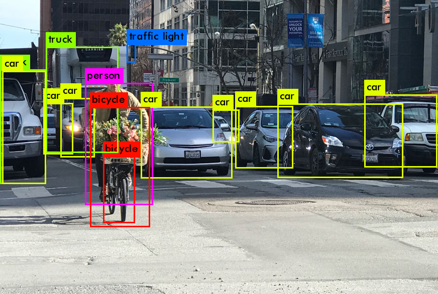
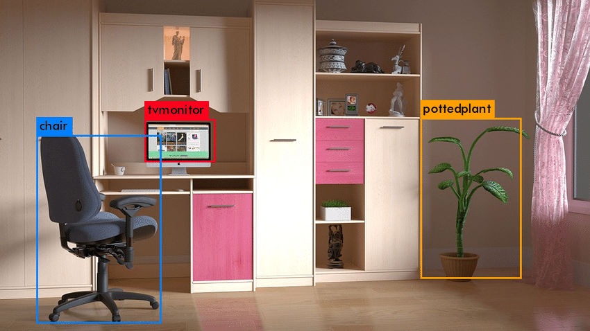
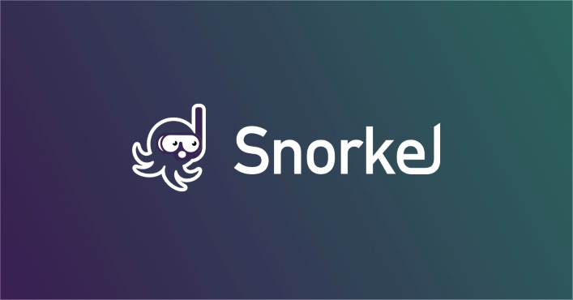
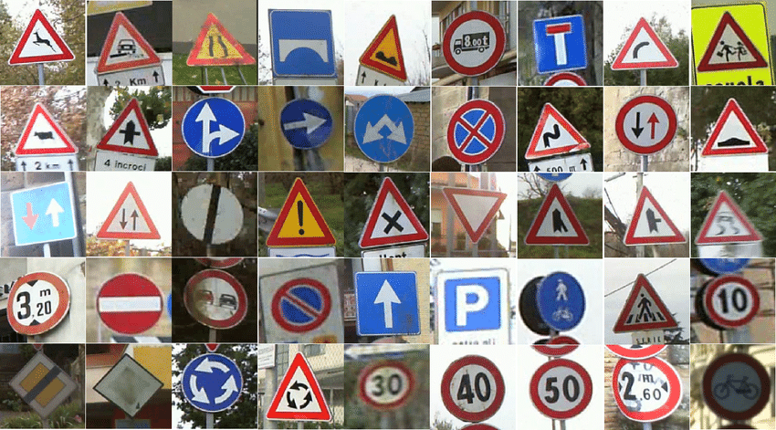
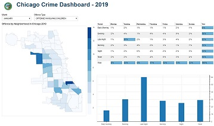

Things I have built
Hands-on projects — detectors, dashboards, and pipelines I have built end to end.

Object Detection – YOLO
A step-by-step methodology to build a simple object detector using YOLO and a webcam feed from your laptop to identify a specific object.
Read the piece →
Object Detection – MobileNet SSD
A step-by-step methodology to build a simple object detector using the MobileNet SSD model and a laptop camera feed — feeding the input image to a pre-trained model and visualizing the detections.
Read the piece →
Weak Supervision Labeling with Snorkel
Snorkel is a system for programmatically building and managing training datasets using the concept of weak supervision. This project demonstrates labeling text messages as spam or not spam using Snorkel.
View on GitHub →
Traffic Sign Detection
Using TensorFlow to build a neural network that classifies road signs from the German Traffic Sign Recognition Benchmark (GTSRB) dataset, which contains thousands of images across 43 kinds of road signs.
View on GitHub →
Chicago Crime Dashboard
Two interactive dashboards (built with Bokeh) aimed at surfacing key insights into criminal offenses committed in the city of Chicago in 2019.
View on GitHub →Data Pipeline – Shelter Homes
Grateful to DataKind for the chance to work on this pro-bono project driven by DC DHS — a data pipeline that collects shelter occupancy data from various shelter homes to help track occupancy rates.
View on GitHub →